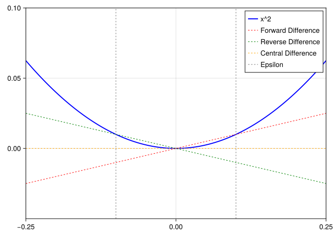
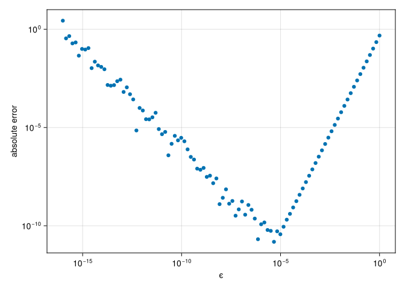

Harnessing the chain rule to compute derivatives not just of simple functions, but of complex programs.
17.2 Motivation for (Automatic) Derivatives
Derivatives are one of the most useful analytical tools we have. Determining the rate of change with respect to an input is effectively sensitivity testing. Knowing the derivative let’s you optimize things faster (see Chapter 18). You can test properties and implications (monotonicy, maxima/minima).
17.3 Finite Differentiation
Finite differentiation is evaluating a function \(f(x)\) at a value \(x\) and then at a nearby value \(x+\epsilon\). The line drawn through these two point effectively estimates the line that is tangent to the function \(f\) at \(x\): effectively the derivative has been found by approximation. That is, we are looking to approximate the derivative using the property:
We can approximate the result by simply choosing a small \(\epsilon\).
There’s also flavors of finite differentiation to approximate derivatives to be aware of:
forward difference is as defined in the above equation, where \(\epsilon\) is added to \(x_0\)
reverse difference is as defined in the above equation, where \(\epsilon\) is subtracted from \(x_0\)
central difference is where we evaluate at \(x_0 \pm \epsilon\) and then divide by \(2\epsilon\)
The benefit of the central difference is that it limits issues around minima and maxima where the trough or peak respectively would seem much steeper if using forward or reverse. Here’s a picture of this:
┌ Warning: Found `resolution` in the theme when creating a `Scene`. The `resolution` keyword for `Scene`s and `Figure`s has been deprecated. Use `Figure(; size = ...` or `Scene(; size = ...)` instead, which better reflects that this is a unitless size and not a pixel resolution. The key could also come from `set_theme!` calls or related theming functions.
└ @ Makie ~/.julia/packages/Makie/GtFuI/src/scenes.jl:227
┌ Warning: Found `resolution` in the theme when creating a `Scene`. The `resolution` keyword for `Scene`s and `Figure`s has been deprecated. Use `Figure(; size = ...` or `Scene(; size = ...)` instead, which better reflects that this is a unitless size and not a pixel resolution. The key could also come from `set_theme!` calls or related theming functions.
└ @ Makie ~/.julia/packages/Makie/GtFuI/src/scenes.jl:227

One benefit of the central difference method is that is often more accurate than forward or reverse. However it comes at the cost of needing to evaluate the function an additional time in many circumstances. Take, for example, the process of optimizing a function to find a maxima or minima. The process usually involves guessing an initial point, evaluating the function at that point, and determining what the derivative of the function is at that point. Both items are used to update the guess to one that’s closer to the solution. This approach is used in many optimization algorithms such as Newton’s Method.
At each step you need to evaluate the function three times: for \(x\), \(x+\epsilon\), and \(x-\epsilon\). With forward or reverse finite differences, you can reuse the prior function evaluation of the prior guess \(x\) As one of the components in the estimation of the derivative, thereby saving an evaluation of the function for each iteration.
There are additional challenges with the finite differences method. In practice, we are often interested in much more complex functions than \(x^2\). For example, we may actually be interested in the sum of a series that is many elements long or contains more complex operations than basic algebra. In the prior example, the \(\epsilon\) is set unusually wide for demonstration purposes. As \(\epsilon\) grow smaller generally, the accuracy of all three finite different methods increases. However, that’s not always the case due to both the complexity of the function that you may be trying to differentiate or due to numerical inaccuracies of floating point math.
To demonstrate, here is a more complex example using an arbitrary function
for this example we’ll show the results of the three methods calculated at different values of \(\epsilon\):
The derivative of \(f(x) = exp(x)\) is itself. That is \(f'(x) = f(x)\) in this special case.
┌ Warning: Found `resolution` in the theme when creating a `Scene`. The `resolution` keyword for `Scene`s and `Figure`s has been deprecated. Use `Figure(; size = ...` or `Scene(; size = ...)` instead, which better reflects that this is a unitless size and not a pixel resolution. The key could also come from `set_theme!` calls or related theming functions.
└ @ Makie ~/.julia/packages/Makie/GtFuI/src/scenes.jl:227

Figure 17.1: A log-log plot showing the absolute error of the finite differences. Further to the left, roundoff error dominates while further to the right, truncation error dominates.
Note
The @. in the code example above is a macro that applies broadcasting each function to its right. @. (f(x0 + ϵ) - f(x0 - ϵ)) / 2ϵ is the same as (f.(x0 .+ ϵ) .- f.(x0 .- ϵ)) ./ (2 .* ϵ)
A few observations:
At virtually every value of ϵ we observe some error from the true derivative.
That error is the sum of two parts: truncation error is inherent in that we are using a given value for ϵ and not determining the limiting analytic value as \(\epsilon \to 0\). The other component is roundoff error which arises due to the limited precision of floating point math.
The implications of this are that we need to often be careful about the choice of ϵ, as the optimal choice will vary depending on the function and the point we are attempting to evaluate. This presents a number of practical diffuclties in various algorithms.
Additionally,when computing the finite difference we must evaluate the function multiple times to determine a single estimate of the derivative. When performing something like optimization the process typically involves iteratively making many guesses — plus the number of guesses required to find the right answer can depends on the ability to accurate determine the derivative at a point!
Admittedly, despite the accuracy and computational overhead, finite differences can be very useful in many circumstances. However, a more appealing alternative approach will be covered next.
17.4 Automatic Differentiation
Automatic differentiation (“autodiff” or “AD” for short) is essentially the practice of defining algorithmically what the derivatives of function should be. We are able to do this through a creative application of the chain rule. Recall that the chain rule allows us to compute the derivative of a composite function using the derivatives of the component functions:
\[
h(x)=f(g(x))
\]\[
h'(x) = f'(g(x)) g'(x)
\]
Using this rule, we can define how elementary operations act when differentiated. Combined with the fact that most computer code is building up from a bunch of elementary operations, we can get a very long way in differentiating complex functions.
17.4.1 Dual Numbers
To understand where we are going, let’s remind ourselves about complex numbers. Complex numbers are of the form which has an real part (\(r\)) and an imaginary part (\(iq\)):
\[
r+iq
\]
By definition we say that \(i^2 = -1\). This is useful because it allows us to perform certain types of operations (e.g. finding a square root of a negative number) that is otherwise unsolvable with just the real numbers1. After defining how the normal algebraic operations (addition, multiplication, etc.) work for the imaginary number, we are able to utilize the imaginary numbers for a variety of practical mathematical tasks.
What is meant by extending the algebraic operations for imaginary numbers? For example, stating how addition should work for imaginary numbers:
\[
(r+iq) + (s+iu) = (r+s) + i(q+u)
\]
In a similar fashion as extending the Real (\(\mathbb{R}\)) numbers with an imaginary part, for automatic differentiation we will extend them with a dual part. A dual number is one of the form:
\[
a + \epsilon b
\]
Where \(\epsilon^2 = 0\) and \(\epsilon \neq 0\) by defintion. For our purposes here, one can think of \(b\) as the derivative of the function evaluated at the same point as \(a\). An intial example should make this clearer. First let’s define a DualNumber:
1struct DualNumber{T,U} a::T b::U2functionDualNumber(a::T, b::U=zero(a)) where {T,U}returnnew{T,U}(a, b)endend
1
We define this type parametrically to handle all sorts of <:Real types and allow a and b to vary types in case a mathematical operation causes a type change (e.g. as in the case of integers becoming a floating point number like 10/4 == 2.5)
2
zero(a) is a generic way to create a value equal to zero with the same type of the argument a. zero(12.0) == 0.0 and zero(12) == 0.
Now let’s define how dual numbers work under addition. The mathematical rule is:
We then need to define how it works for the combinations of numbers that we might receive as arguments to our function (this is an example where multiple dispatch greatly simplifies the code compare to object oriented single dispatch!):
Base.:+(d::DualNumber, e::DualNumber) =DualNumber(d.a +e.a, d.b +e.b)Base.:+(d::DualNumber, x) =DualNumber(d.a + x, d.b)Base.:+(x, d::DualNumber) = d + x
And here’s how we would get the derivative of a very simple function:
f1(x) =5+ xf1(DualNumber(10, 1))
DualNumber{Int64, Int64}(15, 1)
That’s not super interesting though - the derivative of f1 is just 1 and we supplied that in the construction of DualNumber. We did at least prove that we can add the 10 and 5!
Let’s make this more interesting by also defining the multiplication operation on dual numbers. We’ll follow the product rule:
We have found that the second component is 3, which is indeed the derivative of \(5+3x\) with respect to \(x\). And in the first part we have the value of f2 evaluated at 10.
Note
When calcualting the derivative, why do we start with 1 in the dual part of the number? Because the derivative of a variable with respect to itself is 1. From this unitary starting point, the various operations applied accumulate the derivative of the various operations in the \(b\) part of \(a + \epsilon b\).
We can also define this for things like transcendental functions:
And finally, to put it all together in a more usable wrapper, we can define a function which will calcualte the derivative of another function at a certain point:
derivative(f, x) =f(DualNumber(x, one(x))).b
derivative (generic function with 1 method)
And then evaluating it on a more complex function like \(f(x) = 5e^{sin(x)}+3x\) at \(x = 0\), we would analytically derive \(8\), which matches what we calculate next:
letf(x) =5*exp(sin(x)) +3xderivative(f, 0)end
8.0
We have demonstrated that through the clever use of dual numbers and the chain rule that complex expressions can be automatically differentiated by the computer to an exact level, limited only by the same machine precision that applies to our primary function of interst as well.
17.5 Performance of Automatic Differentiation
Recall that in the finite difference method, we generally had to evalue the function two or three times to approximate the derivative. Here we have a single function call that provides both the value and the derivative at that value. How does this compare performance-wise to simply evaluating the function a single time?
usingBenchmarkTools@btimef2(rand())
2.541 ns (0 allocations: 0 bytes)
5.447977714864544
@btimef2(DualNumber(rand(), 1))
2.542 ns (0 allocations: 0 bytes)
DualNumber{Float64, Int64}(7.035915764420185, 3)
In performing this computation, the compiler has been able to optimize it such that we effectively are able to compute the function and its derivative at effetcitly the same speed as just the evaluating the function itself! As the function gets more complex, the overhead does increase but is still a much preferred option versus finite differentiation. This advantage becomes more pronouced as we contemplate derivatives with respect to many variables at once or for higher-order derivatives.
Note
In fact, it’s largely due to the advances in applications of automatic differentiation that has led to the explosion of machine learning and artificial intelligence techniques in the 2010s/2020s. The “learning” process relies on solving parameter weights and would be too computationally expensive if using finite differences.
These applications of autodiffertiation in specialized C++ libraries underpin the libraries like PyTorch, Tensorfow, and Keras. These libraries specialize in allowing for autodiff on a limited subset of operations. Julia’s available automatic differentiation is more general and can be applied to many more scenarios.
17.6 Automatic Differentiation in Practice
We have, of course, not defined an exhaustive list of operations, covering only +, *, exp, sin, and cos. There are only a few more arithmetic (-, /) and trancendental (log, more trigonometric functions, etc.) before we would have a very robust set of algebraic operations defined for our DualNumber. In fact, it’s possible to go even further and to define the behavior through conditional expressions and iterations to differentiate fairly complex functions or to extend the mechanism to partial derivatives and higher-order derivatives as well.
importDistributionsimportForwardDiffN(x) = Distributions.cdf(Distributions.Normal(), x)functiond1(S, K, τ, r, σ, q)return (log(S / K) + (r - q + σ^2/2) * τ) / (σ *√(τ))endfunctiond2(S, K, τ, r, σ, q)returnd1(S, K, τ, r, σ, q) - σ *√(τ)end""" eurocall(parameters)Calculate the Black-Scholes implied option price for a european call where `parameters` is a vector with the following six elements:- `S` is the current asset price- `K` is the strike or exercise price- `τ` is the time remaining to maturity (can be typed with \\tau[tab])- `r` is the continuously compounded risk free rate- `σ` is the (implied) volatility (can be typed with \\sigma[tab])- `q` is the continuously paid dividend rate"""functioneurocall(parameters)1 S, K, τ, r, σ, q = parametersiszero(τ) &&returnmax(zero(S), S - K) d₁ =d1(S, K, τ, r, σ, q) d₂ =d2(S, K, τ, r, σ, q)return (N(d₁) * S *exp(τ * (r - q)) -N(d₂) * K) *exp(-r * τ)end
1
We put the various variables inside a single parameters vector to allow calling a single gradient call instead of multiple derivative calls for each parameter.
Derivative is generally the scalar rate of change in output relative to a scalar input and can be used in the context of partial derivatives for a multi-variate function (e.g. \(\frac{d}{dx}f(x,y,z)\)).
Gradient is the first derivative with respect to all dimensions of a function that outputs a scalar. For a function \(f(x,y,z)\) the gradient would be a vector of partial derivatives such that you would get \([\frac{d}{dx},\frac{d}{dy},\frac{d}{dz}]\)
Jacobian is the first derivative with respect to all dimensions of a function that outputs a vector.
Hessian is the second derivative with respect to all dimensions of a function that outputs a scalar.
With the above code, now we can get the partial derivaties with respect to each parameter. The first, third, fourth, fifth, and sixth correspond to the common “greeks” delta, theta, rho, vega, and epsilon respectively. The second term is the parital derivative with respect to the strike price:
We can also get the second order greeks with a simple call. In addtion to many uncommon second order parital derivatives. Gamma is in the [1,1] position for example:
Earlier we examined the impact on performance for the derivatives using the DualNumber developed in this chapter on a very basic function. What about if we take a more realistic example like eurocall? We can observe approximately a 9x slowdown when computing all of the first order derivatives which isn’t bad considering we are computing 6x of the outputs!
@btimeeurocall($params)
35.834 ns (0 allocations: 0 bytes)
0.02493376819403728
let1 g =similar(params)@btime ForwardDiff.gradient!($g, eurocall, $params)end
1
To avoid benchmarking allocating a new array we are able to pre-allocate the memory to store the result and then call gradient! to fill in g for each result.
The approach of autodiff outlined about is called forward mode auto-differetiation where the derivative is brought forward through the computation and accumulated through each step. The alternative to this is to first evaluate the function and then work backwards by accumulating the partial derivatives in what’s called reverse mode automatic differentiation.
Reverse mode requires more book-keeping because unlike the forward mode the derivative needs to be carried backwards, unlike the DualNumber approach of forward mode.
17.8 Practical tips for Automatic Differentiation
Here are a few practical tips to keep in mind.
17.8.1 Choosing between Reverse Mode and Forward Mode
Forward mode is more efficient when the number of outputs is much larger than the number inputs. When the number of inputs is much larger than the number of outputs, then reverse mode will generally be more efficient. Examples of the number of inputs being larger than the outputs might be in a statistical analysis where many features are used to predict a limited number of outcome variables or a complex model with a lot of parameters.
17.8.2 Mutation
Auto-differentiation works through most code, but a particularly tricky part to get right is when values within arrays are mutated (changed). It’s possible to do so but may require a little bit more boilerplate to setup. As of 2024, Enzyme.jl has the best support for functions with mutation inside of them.
17.8.3 Custom Rules
Custom rules for new or unusal functions can be defined, but this is an area that should be explored equipped with a bit of calculus and a deeper understanding of both forward-mode and reverse-mode. ChainRules.jl provides an interface for defining additional rules that hook into the AD infrastrucutre in Julia as well as provide a good set of documentation on how to extend the rules for your custom function.
Zygote.jl is a reverse-mode package with the innovations of being able to differentiate structs in addition to arrays and scalars.
Enzyme.jl is a newer package which allows for both forward and reverse mode, but has the advantage of supporting array mutation. Additionally, Enzyme works at the level of LLVM code (an intermediate level between high level Julia code and machine code) which allows for different, sometimes better, optimizations.
In the authors experience, they would probably recommend ForwardDiff.jl first and then Enzyme.jl if reaching for more advanced functionality or looking for reverse mode.